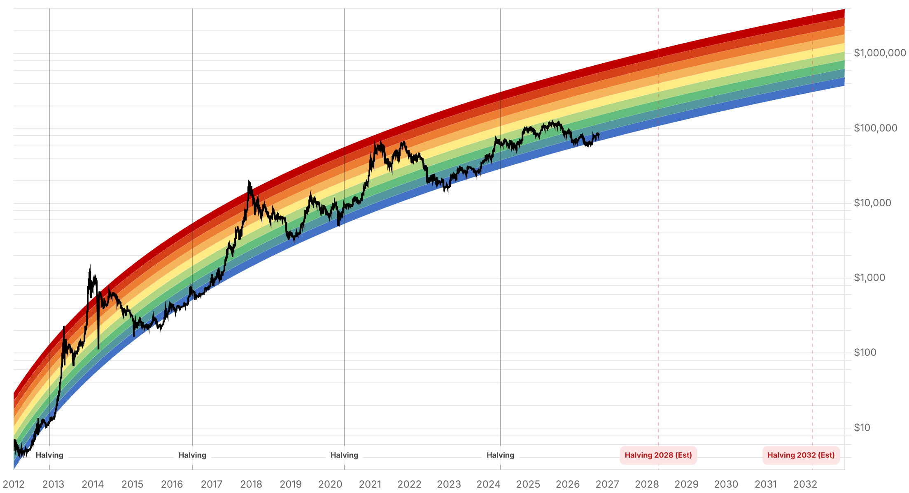

Reporte financiero
BTC cotiza en USD 80.984,75 en vivo (07:24 UTC), -0,72% frente al cierre de ayer (USD 81.573,10) y ha caído por debajo de USD 81.000 -más de 3% en las últimas 24 horas según datos de mercado durante la sesión asiática, tocando mínimos cercanos a USD 80.474-. El catalizador que ayer quedaba pendiente ya se resolvió: el IPC de septiembre de EE.UU., publicado el 14 de octubre, salió más caliente de lo esperado en ambos frentes -headline en 3,7% interanual (vs. 3,6% esperado, arriba del 3,4% de agosto) y núcleo en 2,6% interanual (vs. 2,5% esperado, arriba del 2,4% previo), con el componente mensual de núcleo en 0,3% (vs. 0,2% esperado) y la gasolina subiendo 9,1% en el mes-. Este dato caliente, sumado a un derrumbe en las bolsas asiáticas (Kospi surcoreano cayendo cerca de 8% en la sesión de la mañana, con Samsung Electronics y SK Hynix bajando más de 9%; Nikkei japonés cayendo cerca de 5%) y arrastre desde Wall Street (Nasdaq -1,88% y S&P 500 -1,11% el miércoles), empujó a todo el mercado cripto a la baja -Ethereum cayó cerca de 6,4% a USD 2.356 aproximadamente, Solana cerca de 5,5%, XRP cerca de 5% y Dogecoin cerca de 6%-, con aproximadamente USD 483M en liquidaciones de futuros cripto en 24 horas (BTC ~USD 197M, ETH ~USD 286M, según CoinGlass). El Fear & Greed Index refleja este giro, cayendo de 62 (Greed) a 53 (Neutral) -nueve puntos en un día-. El analista 'Crypto Patel' señala USD 80.108 como soporte clave, advirtiendo que una ruptura confirmada por debajo de ese nivel con cierre de vela de temporalidad alta podría abrir la puerta a una zona bajista de USD 70.000-65.000 -aclarando que es una proyección condicional, no un hecho confirmado-; otro analista más bajista ('Crypto Lens') llega a mencionar objetivos de USD 75.000, 70.000 y hasta 57.000, aunque esas cifras son más especulativas y no están corroboradas por múltiples fuentes. Sobre los flujos de ETF spot del 13-14 de octubre, las fuentes públicas consultadas hoy dan cifras contradictorias entre sí (desde salidas netas de ~USD 327M hasta inflows aislados de IBIT) sin que ninguna pueda confirmarse con un dato primario accesible hoy (Farside Investors devolvió error 403 al intentar consultarlo directamente) -por lo tanto este reporte no fija una cifra de flujo de ETF para evitar inventar un dato no verificado, a diferencia de los días anteriores-. No hay novedad nueva de Strive ni de Strategy/Saylor desde las compras reportadas ayer y anteayer (32.773 BTC y 848.250 BTC respectivamente). Tampoco hay desarrollo nuevo en Tether/Cantor Fitzgerald, Clarity Act o el marco de ETF de Tailandia. De cara a la reunión de la Fed del 27-28 de octubre, las probabilidades de una subida de tasas ya eran materia de debate activo antes de este IPC (estimaciones públicas dispersas entre ~17% y ~50% según la fuente y la fecha de corte); no se encontró una cifra de consenso actualizada específicamente post-dato de hoy en fuentes confiables, por lo que este reporte no asigna una probabilidad puntual nueva.
El IPC de septiembre de EE.UU., publicado el 14 de octubre, superó las expectativas en ambos frentes: headline en 3,7% interanual (consenso 3,6%, arriba del 3,4% de agosto) con un alza mensual de 0,6%; núcleo en 2,6% interanual (consenso 2,5%, arriba del 2,4% previo) con un alza mensual de 0,3% (consenso 0,2%). La gasolina subió 9,1% en el mes y explicó buena parte del alza mensual. Es el dato que el reporte de ayer señalaba como catalizador pendiente -la señal hawkish de John Williams (Fed de Nueva York) sobre una posible subida adicional este año, reportada ayer, se ve ahora reforzada por un IPC que corrobora presión inflacionaria.
Bitcoin perdió el soporte de USD 81.000 durante la sesión asiática de hoy, tocando mínimos cercanos a USD 80.474, en una caída de más de 3% en 24 horas. El movimiento coincide con un derrumbe en las bolsas de Asia -el Kospi surcoreano cayó cerca de 8% en la mañana, con Samsung Electronics y SK Hynix bajando más de 9%, y el Nikkei japonés cayó cerca de 5%- además del arrastre de Wall Street del miércoles (Nasdaq -1,88%, S&P 500 -1,11%). El resto del mercado cripto cayó con más fuerza relativa que BTC: Ethereum ~-6,4% (USD 2.356 aprox.), Solana ~-5,5%, XRP ~-5%, Dogecoin ~-6%, con aproximadamente USD 483M en liquidaciones de futuros en 24h (BTC ~USD 197M, ETH ~USD 286M según CoinGlass).
El giro de sentimiento es la contraparte directa del movimiento de precio: el índice pasó de 62 (Greed) ayer a 53 (Neutral) hoy, una caída de 9 puntos en 24 horas -el mayor movimiento diario de este indicador reportado en esta serie de informes hasta ahora.
A diferencia de reportes anteriores, hoy no fue posible confirmar con una fuente primaria la cifra de flujo neto de los ETF spot de Bitcoin en EE.UU. para el 13 o 14 de octubre -Farside Investors (la fuente usada en reportes previos) devolvió error 403 al consultarla directamente, y las fuentes secundarias encontradas se contradicen entre sí (desde salidas netas agregadas de ~USD 327M hasta reportes aislados de inflows de IBIT, con cifras acumuladas de IBIT que no coinciden entre artículos). Este reporte omite deliberadamente una cifra de flujo de ETF para el día de hoy en vez de citar un número no verificado; se intentará de nuevo en el próximo ciclo.
No se encontró novedad nueva sobre las tenencias de Strive (32.773 BTC, reportado ayer) ni de Strategy/Saylor (848.250 BTC, compra de 250 BTC reportada anteayer). El plazo de Cantor Fitzgerald para responder a la carta del senador Blumenthal sigue vigente hasta el 23 de octubre sin pronunciamiento nuevo; tampoco hay avance en la Clarity Act desde el cloture fallido del 15 de septiembre, ni en el cronograma de ETF de Bitcoin/Ether en Tailandia.
| Periodo | Valor |
|---|---|
| 9 oct | 82546.32 |
| 10 oct | 82912.23 |
| 11 oct | 83679.47 |
| 12 oct | 81762.56 |
| 13 oct | 83095.13 |
| 14 oct | 81562.49 |
| 15 oct (en vivo) | 80984.75 |
| Periodo | Valor |
|---|---|
| Fear & Greed | 53 |

“A clean breakdown below $80,108 followed by a confirmed HTF candle close could open the door to the 70K-65K downside zone.”
“Advierte objetivos a la baja en USD 75.000, 70.000 e incluso USD 57.000 si el mercado amplio (con pérdidas de más de USD 140.000M citadas) continúa deteriorándose -proyección más especulativa, no corroborada por otras fuentes.”
El catalizador que ayer estaba pendiente (IPC de septiembre) ya se resolvió caliente (3,7% headline, 2,6% núcleo), y el mercado lo está digerendo con una caída que llevó a BTC bajo USD 81.000. El nivel a vigilar en el muy corto plazo es el soporte de USD 80.108 señalado por Crypto Patel -una ruptura confirmada abriría camino hacia la zona de USD 70.000-65.000 (conditional, no confirmado); una recuperación necesitaría reconquistar la zona de USD 83.000-85.000 que fue soporte/resistencia los últimos días. La correlación con el riesgo bursátil (Nasdaq, S&P 500, Kospi, Nikkei) parece haber sido un driver tan relevante hoy como el dato de inflación en sí.
El rango base de QCP Capital para el Q4 (USD 80.000-90.000), citado en reportes anteriores, está siendo testeado directamente desde su borde inferior por primera vez en esta serie de reportes -sin que esto invalide el rango todavía, pero sí reduce el margen antes de que quede en entredicho. La reunión de la Fed del 27-28 de octubre es el próximo catalizador macro relevante: las probabilidades de una subida de tasas ya eran objeto de debate antes del IPC de hoy (estimaciones dispersas entre ~17% y ~50% según la fuente), y es razonable esperar que suban tras un dato más caliente de lo esperado, aunque no se encontró una cifra de consenso actualizada confiable para asignar aquí. La consolidación de Strive y Strategy como grandes tenedores corporativos (32.773 BTC y 848.250 BTC respectivamente, sin cambios desde ayer) sigue como narrativa de demanda estructural de fondo.
Sin cambios en los objetivos de precio de largo plazo ya reportados en ediciones anteriores (Citigroup, Bernstein, Standard Chartered, Tom Lee, NYDIG, Armstrong) ni en el trasfondo regulatorio de fondo (Clarity Act, Tether/Cantor Fitzgerald, ETF de Tailandia). La corrección de hoy no cambia por sí sola estos marcos de largo plazo, aunque refuerza la relevancia de vigilar la correlación de BTC con activos de riesgo tradicionales en el corto plazo.
El nivel señalado por el analista Crypto Patel (USD 80.108) es el soporte técnico inmediato más citado hoy. Una ruptura confirmada con cierre de vela de temporalidad alta por debajo de ese nivel sería la señal técnica a vigilar antes de asumir una continuación hacia USD 70.000-65.000 -hasta entonces, se trata de una proyección condicional, no un hecho.
El derrumbe de hoy combina el IPC caliente con una caída marcada en bolsas asiáticas (Kospi, Nikkei) y el arrastre de Wall Street del miércoles. Tratar el movimiento como una historia puramente cripto/macro-inflación ignora que el apetito de riesgo global se deterioró en simultáneo -relevante para calibrar si un rebote en renta variable podría acompañar una recuperación de BTC.
Las fuentes secundarias consultadas hoy sobre los flujos de ETF del 13-14 de octubre se contradicen entre sí y no pudieron verificarse contra Farside Investors (bloqueado con error 403 en el intento de hoy). Cualquier decisión que dependa de la dirección del flujo de ETF debería esperar a una fuente primaria confiable en los próximos reportes.